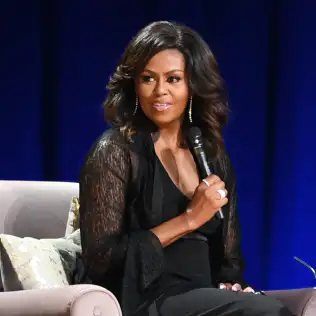

Michelle Obama est une actrice importante du féminisme actuel. Très investie, elle fait de nombreux discours pour promouvoir les valeurs du féminisme dans le monde.
La Biographie
Michelle Obama est née le 17 janvier 1964 à Chicago. Son rôle de première dame lors de la présidentielle de son mari Barack Obama l'a rendue très célèbre. Cependant, à l'exception de ses prédécesseurs, Michelle Obama n’a pas eu besoin de la mise en avant de la présidentielle de son mari. En effet, elle était déjà très connue des médias et avait réussi à prouver sa valeur grâce à ses idées avant même la mise en avant par la présidentielle. Elle est également avocate. Elle a fait des études de sociologie avant de se tourner vers le droit dans la Faculté d’Harvard. C’est aussi une mère modèle respectée. Elle a deux filles : Malia et Natasha.

Michelle Obama
C'est sa franchise, sa force et son investissement dans plusieurs causes qui la font particulièrement appréciée et respectée des médias. Elle possède donc un important poids médiatique et politique.
La féministe Michelle Obama
Michelle Obama est très investie dans différentes causes notamment contre le racisme, l’obésité, mais également pour le féminisme.
En effet, elle a fait de nombreux discours pour l’accès à l’éducation des jeunes filles dans le monde. Elle s'est également positionnée contre les violences faites aux femmes, autant physiques que morales. Elle est d’ailleurs apparue aux côtés de Tarana Burk, la créatrice du mouvement #metoo. Selon elle, il faut passer de la conversation à l’action. Elle a elle-même avoué avoir déjà subi des réflexions sexistes.
On demandait à mon frère ce qu’il voulait faire plus tard, à moi on me demandait avec quel genre d’homme je voulais me marier.
Cette phrase souligne bien que dans l’esprit collectif, la vie d’une femme n’est pas une carrière mais un mariage. Ce qui est totalement à l'opposé de la vision de la vie des hommes qui se résume à leur carrière.
Lorsqu’elle évoquait ses rêves et ses objectifs, les gens autour d’elles lui montraient qu’en tant que fille, sa voix comptait moins et que ce dont elle rêvait valait moins que son apparence, ce qu’elle renvoyait.
Selon eux, une femme devait surtout se préoccuper de son physique et de son mariage, plutôt que de rêver à une carrière.
La force de Michelle Obama s’est également illustrée par le fait qu’elle a réussie à être écoutée et à faire entendre ses idées, en tant que femme d’une part et en tant que femme noire d’autre part.
Discours de Michelle Obama - Londres
En effet, les femmes noires possèdent 2 facteurs qui peuvent les “handicaper” dans notre société sexiste et raciste. Ainsi, Michelle Obama a su dépasser ses obstacles et s’imposer sur la scène médiatique pour partager ses idées.
Michelle Obama parcourt le monde pour donner des conférences. Selon elle, les femmes sont sous estimées et même en danger.
C’est pourquoi, il faut être solidaire et que celles qui ont le pouvoir de parler le fassent pour celles qui ne peuvent pas.
Les discours de Michelle Obama ont permis de réveiller les consciences et de pousser les femmes à se poser des questions sur leurs conditions. Elle a su faire passer aux femmes du monde le message qu’aujourd’hui il ne faut plus que les femmes s’écrasent face aux hommes, qu’elles pensent par elles-mêmes.